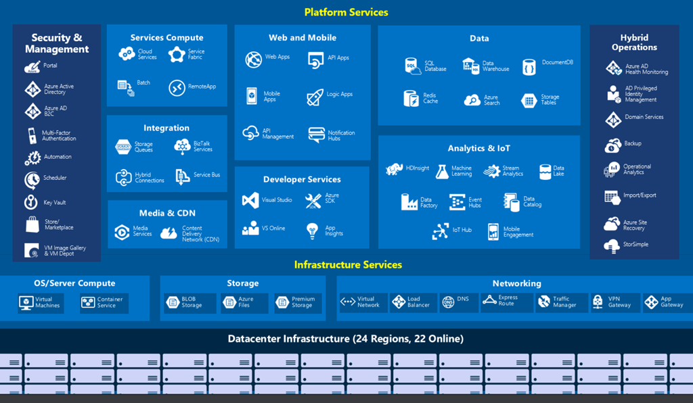
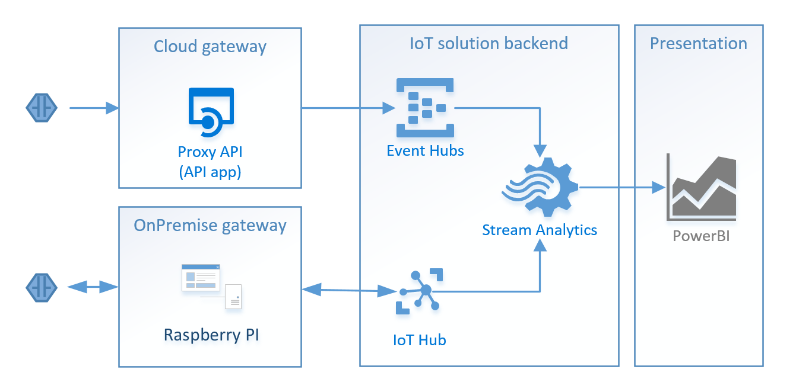

Azure IoT and sensors
Global Azure Bootcamp 2016, Finland
Who am I?
CEO of Integround
Integration all-arounder, not hard core code wizard
Generally interested in new technologies
Why bother with IoT?
6.4B connected things in 2016, _**20.8B**_ by year 2020, [(Gartner)](http://www.gartner.com/newsroom/id/3165317)
Business size 6.2 _**trillion**_ dollars by 2025, [(McKinsey)](http://www.mckinsey.com/industries/high-tech/our-insights/the-internet-of-things-sizing-up-the-opportunity)
Microsoft seems to put rather significant efforts towards IoT tool development
It's cool
IoT reference architecture

Azure IoT offerings

IoT Suite vs Azure Services for IoT
Azure IoT Suite is a collection of pre-configured solutions (preventive maintenance, remote monitoring)
Azure Services for IoT is a collection of tools that can be used to build IoT solutions (IoT Hub, Steam Analytics, Storage, App Service...)
IoT Hub vs Event Hubs
| IoT Hub | Event Hubs |
|---|---|
| Two-Way communication | Device-to-Cloud communication |
| Per-device identity | Shared access policies |
| Optimized for millions of simultaneous devices | More limited number of simultaneus connections (still thousands) |
| SDKs for multiple platforms and languages | Support for .Net and C. Also AMQP and HTTP send interfaces |
| Seems to get new IoT solution specific features | Component only for event ingress |
New announcements from Build
IoT Hub management SDK
Gateway SDK
Introduction to demo
Collect data from sensors (do the hard work)
Process data
Persist data
Present data (impress your boss)
Demo architecture

Demo time...
Kudos
Sandeep Mistry (https://github.com/sandeepmistry)
Uffe Björklund / @ulfbjo https://github.com/codeplanner)